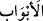
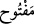
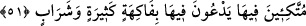

“Kapıları” hem de ardına kadar “yalnızca” muttakîlerin “kendilerine açılmış” halde
bulunan“Adn cennetleri vardır.” Burada, “güzel bir gelecek”in ne olduğu
açıklanmaktadır.
Lügatte (
) kelimesi “ikâmet” anlamına gelir, ancak kelime daha sonraları bu
cennetler için kullanıla kullanıla bunların özel adı (alemi) olmuştur.
Ebu Saîd el-Hudrî (r.a.) Hz. Peygamber’in (s.a.) şöyle buyurduğunu rivâyet etmiştir:
“Şüphesiz Allah Adn cennetinin inşâsını bizzat kendi üstlenmiş ve onu altın ve gümüş
kerpiçlerle binâ etmiştir. Harcının suyunu miskten, kumunu za’ferandan,
çakıltaşlarını da yakuttan yapmıştır. Sonra kendisine ‘konuş’ deyince, Adn,
“mü’minler felâha erdi” demiş, melekler de “gözün aydın ey hükümdarların
ikâmetgâhı!” demişlerdir.”[36]
Fakîr (Bursevî) der ki: Bu hadîs-i şerif, Adn cennetinin halka göre hükümdar
mesâbesinde olan mukarreb kullar ile havâssa âid olduğunu gösteriyor. “Mü’minler
felâha erdi” ifâdesinin hangi mü’minler olduğu belirtilmeden mutlak bırakılması da
buna delâlet eder. Çünkü Cenâb-ı Hak, Kur’an-ı Kerim’de “mü’minler felâha erdi”
ifâdesinin peşinden birtakım sıfatlar zikretmektedir ki bunları havâs kullardan
başkasının îfâ edebilmesi kolay değildir. Hâsılı, seyislerin (yeri) nerede hükümdar
konağı nerede!
(
) lâfzı, (
)’in mef’ûlüdür. Yâni, bu cennetlere ulaştıklarında, kapılarının
açılmış olduğunu görecekler ve açmak için birtakım zorluklarla karşılaşmayacaklar; ne
izin isteme külfetine, ne de kapıların yüzlerine kapalı olması zilletine dûçâr olacaklar.
Melekler kendilerini “merhaba, hoşgeldiniz, buyurun!” sözleriyle karşılayıp kendilerine
büyük değer verecekler ve “sabrınıza karşılık olarak selâm size! Dünya yurdunun
sonu olarak ne kadar güzel bir âkıbetle karşılaştınız!” (er-Ra’d 13/24) diyecekler.
Bu tıpkı “kapım size dâimâ açıktır, hiçbir şey girmenizi engellemez” ifâdesindeki gibi
bir anlam taşımaktadır.
Şayet, kapların açık olduğu ifâde edilirken niçin feth masdarı (
) değil de -çokluk
bildiren- teftîh masdarı (
) tercih edilmiş olabilir, bunun ne faydası var? diye
soracak olursanız, deriz ki bu, cennetin pek çok kapısı olmasından değil, mübâlağa
ifâde etmek ve kapının büyük bir kapı olduğunu hissettirmek için tercih edilmiştir.
Nitekim bu kapının ne kadar geniş olduğu ve çok sayıda kişinin girebildiği hususunda
hadis vârid olmuştur. Bir ihtimal olarak da bu kapının insana açılması için çok sayıda
sıkıntılı ve büyük amelin gerektiğine işâret edilmiş olabilir. Zira cennete giden yola hiç
de arzu edilmeyen şeyler döşenmiş bulunmaktadır. Öyle ki Cebrâîl (a.s.) cennetin büyük
nimetlerinin yanında bu arzu edilmeyen şeyleri de gördüğünde ‘Ya Rab!’ demiş, ‘Bu ne?
Buraya hiç kimse giremez!’